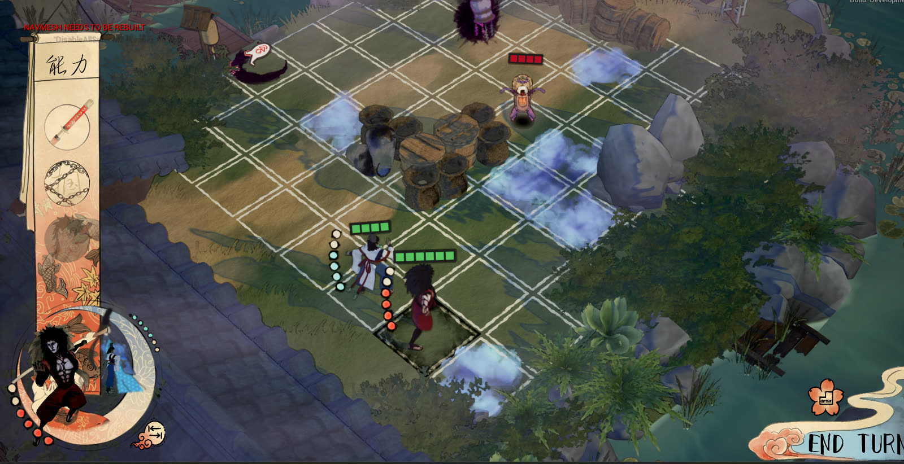
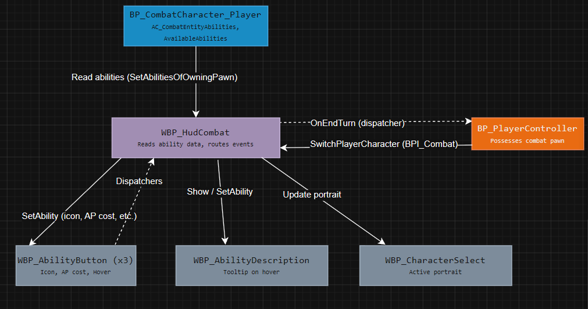
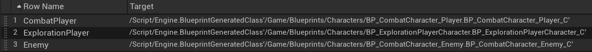
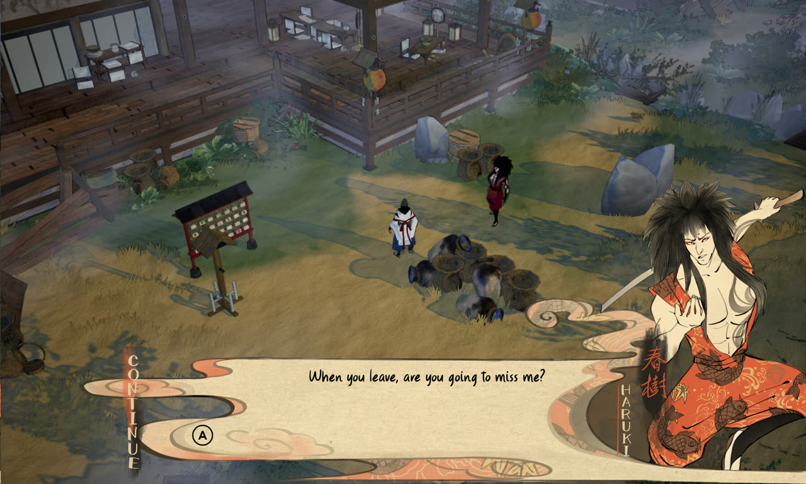
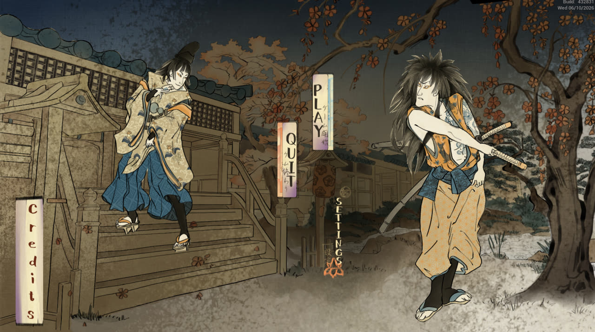

What I built
I worked on Spirit Cleansers for three blocks, from concept to the Steam release. In the last block I was on the "feedback and feel" strike team, which owned UI, VFX, SFX and animation. My part was the UI. Over the project I built:
- the combat HUD: abilities, action points, health bars with a damage preview and ability descriptions, later rebuilt with the final art
- the dialogue system on top of the Mountea Dialogue System plugin: responses, speaker portraits, trigger boxes and a letter-by-letter text reveal
- a data-driven command system so dialogue can trigger gameplay events
- a data-driven onboarding system that designers edit through data tables
- the title, pause, settings, loading, credits and controls screens, with controller support
- one interface settings menu for UI scale and font
During concepting the combat was a deck-builder, and I built the card system for that prototype (deck, hand and playing cards). Everything was made in Blueprints, reviewed through a Perforce code review pipeline and planned in Jira.
Technical details
Combat HUD

The HUD shows the abilities of the active character, the action points left, and a description panel with the cost, range and damage of the selected ability. Buttons grey out when the player doesn't have enough action points, and everything works with mouse and controller. In the last block I rebuilt the layout around the new art together with the UI artist, who sent assets in passes while I put them in and shared the result in-game.
The HUD widget doesn't store the abilities itself. They live in an ability component on the player character, and the HUD reads them from there when it rebuilds its buttons. Other systems, like the combat manager and character switching, need the same data, so the character is the one place that owns it. I tried to keep widgets as views that read state instead of owning it.
The ability buttons talk to the HUD through event dispatchers (pressed, hover, unhover) instead of direct references, so several parts of the HUD can react to one press without the button knowing about them. The player controller tells the HUD to switch characters through a Blueprint Interface, so it doesn't need to know the widget type. After a code review comment, I also changed the ability buttons so they are no longer rebuilt every frame.

Health bars and damage preview
The health bar is a world-space widget on each combat character, made of one segment widget per hit point. Players get green bars and enemies get red ones. I looked at using a single progress bar, but health in the game is whole hit points, and segments show that more clearly. Segments also made the damage preview simple: when you hover over an enemy with an ability selected, the segments you would remove start blinking, and a skull icon appears if the attack would kill. With a progress bar I would have needed a second fill on top and exact percentages for the preview.
Dialogue text reveal
The dialogue text appears letter by letter with a scribble sound, and pressing continue shows the full line at once. My first version set a growing substring of the line on the text block with a timer. That worked, but the line breaks jumped around: a half-typed word could fit at the end of a line, and as soon as the next letter pushed it past the wrap width the whole word jumped to the next line.
I fixed it by always putting the full line in the text block and only changing the opacity per character with rich text style tags. I made five styles with the same font and alpha values of 1, 0.75, 0.5, 0.25 and 0. Every 0.04 seconds the string is rebuilt from five parts:
<full>{revealed so far}</><f3>{next char}</><f2>{char}</><f1>{char}</><hidden>{rest}</>Because the characters and their positions never change, the line breaks are calculated once and stay put, and the leading edge fades in over three characters instead of popping in. Skipping clears the timer handle and writes the full text. That happens in the same event that starts the next line, so the cleanup is in one place. I later reused the same idea for the text in the onboarding help boxes.
Dialogue commands and triggers
Designers needed dialogue to trigger things in the level, like starting combat. One option was a custom decorator with hardcoded logic in the plugin for every case, but then every new command would need a programmer. Instead, commands are rows in a data table. Each row has a command prefix and a target actor. When a dialogue node has a command tag, a command manager looks up the row and calls the command on the target through a Blueprint Interface. Designers add new commands by adding a row.

I also added speaker portraits looked up from a data table by the speaker tag, trigger boxes where designers pick which dialogue plays, an option to play a conversation only once, player movement locking during dialogue, and an end-of-conversation interface so actors in the level can react when a conversation finishes. In the last block I put in the new speech bubble and dialogue box art.

Onboarding system
The first onboarding system got harder to maintain with every help message we added, and designers needed me each time they wanted a new one. I proposed rebuilding it around data and then built the new version:
- an onboarding step struct with enums for the trigger condition and how a step completes
- three help data tables that hold the text, so designers edit content without touching Blueprints
- an onboarding manager behind a Blueprint Interface, so any system can trigger help without a direct reference
- new triggers for action points, ending a turn and killing a cursed object
I moved the three onboarding combat levels over to the new system and checked that every message still showed up at the right moment. In the final week a designer could add and change onboarding content without my help.
Menus and settings
I built the title screen (with Rive animations on the buttons), the pause menu, the loading screen and the credits and controls pages, and connected the settings menu. UI scale for the combat HUD, the dialogue box and the speech bubbles, plus the font choice, started as three separate accessibility tickets. I combined them into one interface settings tab that reads from one save game, with a shared small, medium and large scale agreed with the designers. I also fixed the controller hover state on menu buttons and the remaining UI bugs from the build review.

A performance fix before release
I had built a character switching animation that used render targets. During a profiling session, tech design found that the render targets were loaded twice in the persistent level and took about a third of the render time. Doing it properly would have taken more time than we had before the hotfix release, so the team agreed to disable it. I made and submitted the fix, and tech design measured the frame time going from 12.5 ms to 7.5 ms.
What I learned
The systems that worked best were the ones where I kept data apart from logic: the dialogue commands, the onboarding tables and the ability data. Designers could then change things without waiting for me. I also learned to check with designers and the UI artist before building something, for example agreeing on asset types before implementing a new HUD design, instead of reworking it afterwards.
Credits
Spirit Cleansers was made by team 1Derful at Breda University of Applied Sciences. You can find the game on Steam.